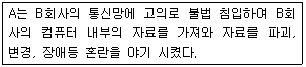
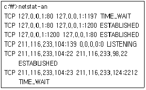
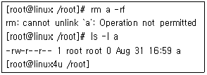
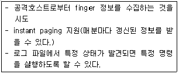
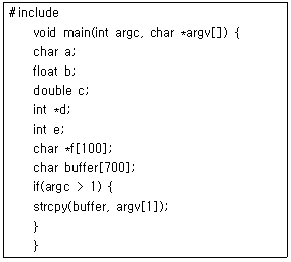
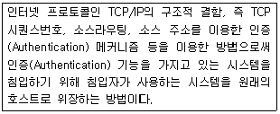

인터넷보안전문가-2급 (2007-09-16 기출문제)
1과목: 정보보호개론
1. 최근 인터넷 웜(Worm)의 공격 및 감염 경로로 가장 옳지 않은 것은?
- Email 첨부
- 공유 네트워크
- 감염된 웹서버 접속
- Anonymous FTP
(정답률: 알수없음)

2. 이산대수 문제에 바탕을 둔 대칭형 암호 알고리즘을 위한 공개키 방식의 키 분배 알고리즘은?
- RSA 알고리즘
- DSA 알고리즘
- MD-5 해쉬 알고리즘
- Diffie-Hellman 알고리즘
(정답률: 37%)
3. 다음 중 유형이 다른 보안 알고리즘은?
- SEED 알고리즘
- RSA 알고리즘
- Rabin 알고리즘
- ECC 알고리즘
(정답률: 알수없음)
4. 다음 암호 알고리즘 중 송, 수신자가 동일한 키에 의해 암호화 및 복호화 과정을 수행하는 암호 알고리즘은?
- 대칭키 암호 알고리즘
- 공개키 암호 알고리즘
- 이중키 암호 알고리즘
- 해시 암호 알고리즘
(정답률: 알수없음)
5. 다음 중 불법적인 공격에 대한 데이터에 대한 보안을 유지하기 위해 요구되는 기본적인 보안 서비스로 옳지 않은 것은?
- 기밀성(Confidentiality)
- 무결성(Integrity)
- 부인봉쇄(Non-Repudiation)
- 은폐성(Concealment)
(정답률: 50%)
6. TCSEC(Trusted Computer System Evaluation Criteria)에서 정의한 보안 등급과 설명이 일치하지 않는 것은?
- C1등급 : 사용자간에 서로 침범할 수 없게 되어 있다.
- A1등급 : B2의 기준을 충족시키며 추가적으로 하드웨어 자원을 포함한 보안 관리자 기능 및 위험시 스스로 탐색한다.
- C2등급 : C1의 기준을 충족시키며, 감사와 로그 기능을 추가한다.
- B1등급 : 등급별로 임의 접근 통제를 한다.
(정답률: 알수없음)
7. 보안 OS(Secure OS)에 대한 설명 중 가장 옳지 않은 것은?

- D1급은 보안에 대한 기능이 없는 것으로, MS-DOS 등이 이에 해당한다.
- C1급은 사용자의 접근제어, Auditing, Shadow Password 등의 부가적인 기능이 제공된다.
- B급의 보안 OS는 다단계 보안을 제공하며, 필수적인 접근제어 등이 제공된다.
- A급은 검증된 설계 수준으로서 수학적인 검증 과정이 요구된다.
(정답률: 알수없음)
8. 다음은 어떤 유형의 컴퓨터 범죄에 해당하는가?(원본 문제 오류로 정답은 1번입니다. 추후 정상적으로 복원하여 두겠습니다.
- 크래킹
- 금융사기
- 프라이버시 침해
- 소프트웨어 불법 복제
(정답률: 67%)
9. 네트워크 보안과 가장 관계가 없는 것은?
- 리피터
- 방화벽
- 개인키
- 공개키
(정답률: 73%)
10. IPSec 프로토콜에 대한 설명으로 옳지 않은 것은?
- 네트워크 계층인 IP 계층에서 보안 서비스를 제공하기 위한 보안 프로토콜이다.
- 기밀성 기능은 AH(Authentication Header)에 의하여 제공되고, 인증 서비스는 ESP(Encapsulating Security Payload) 에 의하여 제공된다.
- 보안 연계(Security Association)는 사용된 인증 및 암호 알고리즘, 사용된 암호키, 알고리즘의 동작 모드, 그리고 키의 생명 주기 등을 포함한다.
- 키 관리는 수동으로 키를 입력하는 수동방법과 IKE 프로토콜을 이용한 자동방법이 존재한다.
(정답률: 알수없음)
2과목: 운영체제
11. Windows 2000 Server가 기본적으로 인식할 수 없는 시스템 디스크 포맷은?
- NTFS
- EXT2
- FAT16
- FAT32
(정답률: 알수없음)
12. DHCP(Dynamic Host Configuration Protocol) 서버에서 이용할 수 있는 IP Address 할당 방법 중에서 DHCP 서버가 관리하는 IP 풀(Pool)에서 일정기간 동안 IP Address를 빌려주는 방식은?
- 수동 할당
- 자동 할당
- 분할 할당
- 동적 할당
(정답률: 80%)
13. Linux 시스템에서 현재 구동 되고 있는 특정 프로세스를 종료하는 명령어는?
- halt
- kill
- cut
- grep
(정답률: 80%)
14. Windows 2000 Server의 기본 FTP 사이트 등록정보 설정에서 익명 연결 허용을 설정할 수 있는 탭은?
- FTP 사이트
- 보안 계정
- 메시지
- 홈 디렉터리
(정답률: 59%)
15. 다음 중 Windows 2000 Server에서 사용자 계정에 관한 옵션으로 설정할 수 없는 항목은?
- 로그온 할 수 있는 컴퓨터의 IP Address
- 로그온 시간제한
- 계정 파기 날짜
- 로그온 할 수 있는 컴퓨터 제한
(정답률: 19%)
16. DNS(Domain Name System) 서버를 처음 설치하고 가장 먼저 만들어야 하는 데이터베이스 레코드는?
- CNAME
- HINFO(Host Information)
- PTR(Pointer)
- SOA(Start Of Authority)
(정답률: 알수없음)
17. 다음 서비스 중에서 Windows 2000 Server에 추가된 새로운 서비스는?
- Active Directory
- DNS
- DHCP
- WINS
(정답률: 알수없음)
18. 다음 중 Windows 2000 Server 운영체제에서 이벤트를 감사할 때 감사할 수 있는 항목으로 옳지 않은 것은?
- 파일 폴더에 대한 액세스
- 사용자의 로그온과 로그오프
- 메모리에 상주된 프로세스의 사용 빈도
- 액티브 디렉터리에 대한 변경 시도
(정답률: 73%)
19. Linux의 LILO 대신, Windows 2000 Server의 OS Loader를 이용해서 Linux를 부팅하려한다. 기존 MBR(Master Boot Record)에 설치된 LILO를 지우는 올바른 방법은?
- Linux로 부팅한 뒤 fdisk 명령을 내려 LILO를 uninstall 한다.
- DOS 용 Fdisk 프로그램을 이용해 fdisk /mbr 명령을 내린다.
- hda1 파티션을 포맷시킨다.
- LILO는 제거 되지 않으므로 fdisk로 새로 파티션 한다.
(정답률: 10%)
20. Linux 명령어 설명으로 옳지 않은 것은?
- ls : DOS의 cd와 비슷한 명령어로 디렉터리를 변경할 때 사용한다.
- cp : 파일을 다른 이름으로 또는 다른 디렉터리로 복사할 때 사용한다.
- mv : 파일을 다른 파일로 변경 또는 다른 디렉터리로 옮길 때 사용한다.
- rm : 파일을 삭제할 때 사용한다.
(정답률: 90%)
21. Redhat Linux 시스템의 각 디렉터리 설명 중 옳지 않은 것은?
- /usr/X11R6 : X-Window의 시스템 파일들이 위치한다.
- /usr/include : C 언어의 헤더 파일들이 위치한다.
- /boot : LILO 설정 파일과 같은 부팅관련 파일들이 들어있다.
- /usr/bin : 실행 가능한 명령이 들어있다.
(정답률: 알수없음)
22. Linux의 root 암호를 잊어버려서 현재 root로 로그인을 할 수 없는 상태이다. Linux를 재설치하지 않고 root로 로그인할 수 있는 방법은?
- 일반유저로 로그인 한 후 /etc/securetty 파일 안에 저장된 root의 암호를 읽어서 root 로 로그인 한다.
- LILO 프롬프트에서 [레이블명] single로 부팅한 후 passwd 명령으로 root의 암호를 변경한다.
- 일반유저로 로그인하여서 su 명령을 이용한다.
- 일반유저로 로그인 한 후 passwd root 명령을 내려서 root의 암호를 바꾼다.
(정답률: 알수없음)
23. Microsoft사에서 제공하는 Windows 2000 Server에서 사용하는 웹 서버는?
- RPC
- IIS
- Tomcat
- Apache
(정답률: 알수없음)
24. 다음 중 디스크의 용량을 확인하는 Linux 명령어는?
- df
- du
- cp
- mount
(정답률: 73%)
25. 다음 디렉터리에서 시스템에 사용되는 각종 응용 프로그램들이 설치되어 있는 것은?
- /usr
- /etc
- /home
- /root
(정답률: 19%)
26. 어떤 서브넷의 라우터 역활을 하고 있는 Linux 시스템에서 현재 활성화 되어있는 IP Forwarding 기능을 시스템을 리부팅하지 않고 비활성화 시키려 한다. 올바른 명령어는? (이 시스템의 커널버전은 2.2 이다.)
- echo "1" > /proc/sys/net/ipv4/ip_forward
- echo "0" > /proc/sys/net/ipv4/ip_forward
- echo "1" > /proc/sys/net/conf/ip_forward
- echo "0" > /proc/sys/net/conf/ip_forward
(정답률: 67%)
27. 다음 Linux 커널 버전 번호 중에서 개발 버전은?
- 2.0.2
- 2.1.1
- 2.4.16
- 2.6.14
(정답률: 46%)
28. 다음 명령어 중에서 데몬들이 커널상에서 작동되고 있는지 확인하기 위해 사용하는 것은?
- domon
- cs
- cp
- ps
(정답률: 알수없음)
29. Telnet과 같은 원격 터미널 세션에서 통신을 암호화하여 중간에서 스니핑과 같은 도청을 하더라도 해석을 할 수 없도록 해주는 프로그램으로 옳지 않은 것은?
- sshd
- sshd2
- stelnet
- tftp
(정답률: 알수없음)
30. Linux에 등록된 사용자들 중 특정 사용자의 Telnet 로그인만 중지시키려면 어떤 방법으로 중지해야 하는가?
- Telnet 포트를 막는다.
- /etc/hosts.deny 파일을 편집한다.
- Telnet 로그인을 막고자 하는 사람의 쉘을 false 로 바꾼다.
- /etc/passwd 파일을 열어서 암호부분을 * 표시로 바꾼다.
(정답률: 알수없음)
3과목: 네트워크
31. FDDI(Fiber Distributed Data Interface)에 대한 설명으로 옳지 않은 것은?
- 100Mbps급의 데이터 속도를 지원하며 전송 매체는 광섬유이다.
- 일차 링과 이차 링의 이중 링으로 구성된다.
- 노드는 이중 연결국(Double Attachment Station)과 단일 연결국(Single Attachment Station)으로 구성된다.
- 매체 액세스 방법은 CSMA/CD 이다.
(정답률: 알수없음)
32. 24 채널을 포함하고, 신호의 속도가 1.544Mbps 인 북미 방식 신호는?
- DS-0
- DS-1
- DS-2
- DS-3
(정답률: 46%)
33. 네트워크 관리자나 라우터가 IP 프로토콜의 동작 여부를 점검하고, 호스트로의 도달 가능성을 검사하기 위한 ICMP 메시지 종류는?
- Parameter Problem
- Timestamp Request/Response
- Echo Request/Response
- Destination Unreachable
(정답률: 알수없음)
34. 네트워크 토폴로지 구성방법 중 모든 네트워크 노드를 개별 라인으로 각각 연결하며 각각의 라인을 모두 중간에서 연결 처리하는 별도의 신호를 처리하는 장치가 필요한 별모양의 네트워크 방식은?
- 메쉬(Mesh)
- 링(Ring)
- 버스(Bus)
- 스타(Star)
(정답률: 70%)
35. 네트워크에 스위치 장비를 도입함으로서 얻어지는 효과로 가장 옳지 않은 것은?
- 패킷의 충돌 감소
- 속도 향상
- 네트워크 스니핑(Sniffing) 방지
- 스푸핑(Spoofing) 방지
(정답률: 알수없음)
36. 네트워크를 구축할 때 데이터 전송 속도를 가장 중요하게 생각할 경우 시스템 회선의 설비는?
- Fiber-Optic
- Thinnet
- 등급1 UTP
- Thicknet
(정답률: 50%)
37. OSL 7 Layer 중 응용 계층 간의 정보 표현 방법의 상이를 극복하기 위한 계층으로, 보안을 위한 암호화/복호화 방법과 효율적인 전송을 위한 압축 기능이 들어 있는 계층은?
- 데이터 링크 계층
- 세션 계층
- 네트워크 계층
- 표현 계층
(정답률: 75%)
38. 네트워크 인터페이스 카드는 OSI 7 Layer 중 어느 계층에서 동작하는가?
- 물리 계층
- 데이터 링크 계층
- 네트워크 계층
- 트랜스포트 계층
(정답률: 알수없음)
39. 10.10.10.0/255.255.255.0인 사설망을 사용하는 사내 망 PC에 10.10.10.190/255.255.255.128이란 IP Address를 부여할 경우 생기는 문제점으로 올바른 것은?(단, 게이트웨이 주소는 정상적으로 설정되어 있다.)
- 해당 컴퓨터는 외부망과 통신할 수는 없지만, 내부망 통신은 원활하다.
- 해당 컴퓨터는 외부망 통신을 할 수 있고, 일부 내부망 컴퓨터들만 통신가능하다.
- 해당 컴퓨터는 외부망 통신만 가능하다.
- 해당 컴퓨터는 외부망 통신을 할 수 있고, 내부망 컴퓨터들과 원활한 통신이 가능하다.
(정답률: 알수없음)
40. 다음 프로토콜 중 계층이 다른 프로토콜은?
- ICMP(Internet Control Message Protocol)
- IP(Internet Protocol)
- ARP(Address Resolution Protocol)
- TCP(Transmission Control Protocol)
(정답률: 알수없음)
41. 시간을 매체로 다중화 하는 통신방식은?
- FDM
- TDM
- WDM
- CDM
(정답률: 59%)
42. SNMP(Simple Network Management Protocol)에 대한 설명으로 옳지 않은 것은?
- RFC(Request For Comment) 1157에 명시되어 있다.
- 현재의 네트워크 성능, 라우팅 테이블, 네트워크를 구성하는 값들을 관리한다.
- TCP 세션을 사용한다.
- 상속이 불가능하다.
(정답률: 알수없음)
43. TCP와 UDP의 차이점을 설명한 것 중 옳지 않은 것은?
- TCP는 전달된 패킷에 대한 수신측의 인증이 필요하지만 UDP는 필요하지 않다.
- TCP는 대용량의 데이터나 중요한 데이터 전송에 이용 되지만 UDP는 단순한 메시지 전달에 주로 사용된다.
- UDP는 네트워크가 혼잡하거나 라우팅이 복잡할 경우에는 패킷이 유실될 우려가 있다.
- UDP는 데이터 전송 전에 반드시 송수신 간의 세션이 먼저 수립되어야 한다.
(정답률: 알수없음)
44. TCP/IP 프로토콜에 관한 설명 중 옳지 않은 것은?
- 데이터 전송 방식을 결정하는 프로토콜로써 TCP와 UDP가 존재한다.
- TCP는 연결지향형 접속 형태를 이루고, UDP는 비 연결형 접속 형태를 이루는 전송 방식이다.
- DNS는 UDP만을 사용하여 통신한다.
- IP는 TCP나 UDP형태의 데이터를 인터넷으로 라우팅하기 위한 프로토콜로 볼 수 있다.
(정답률: 67%)
45. TCP/IP 프로토콜을 이용해 클라이언트가 서버의 특정 포트에 접속을 하려고 할 때 서버가 해당 포트를 열고 있지 않다면 응답 패킷의 코드비트에 특정 비트를 설정한 후 보내 접근할 수 없음을 통지하게 된다. 다음 중 클라이언트가 서버의 열려있지 않은 포트에 대한 접속에 대해 서버가 보내는 응답 패킷의 코드 비트 내용이 올바른 것은?
- SYN
- ACK
- FIN
- RST
(정답률: 알수없음)
4과목: 보안
46. Windows NT 서버의 보안관리 방법 중 옳지 않은 것은?
- 방화벽 프로그램을 설치하여 서버를 보호한다.
- 사용자 그룹에 따라 서버에 접근할 수 있는 사용권한을 제한한다.
- 수시 및 정기적인 백업을 하여 서버 정보를 여러 클라이언트의 빈 디스크에 각각 보관하되 저장되는 클라이언트를 수시로 바꾼다.
- 백업 도메인 컨트롤러를 설치하여 서버 정보 및 시스템 설정을 수시로 백업한다.
(정답률: 알수없음)
47. Windows 명령 프롬프트 창에서 netstat -an 을 실행한 결과이다. 옳지 않은 것은?(단, 로컬 IP Address는 211.116.233.104 이다.)

- http://localhost 로 접속하였다.
- Netbios를 사용하고 있는 컴퓨터이다.
- 211.116.233.124에서 Telnet 연결이 이루어져 있다.
- 211.116.233.98로 ssh를 이용하여 연결이 이루어져 있다.
(정답률: 67%)
48. 프로그램이 exec()나 popen() 등을 이용하여 외부 프로그램을 실행할 때 입력되는 문자열을 여러 필드로 나눌때 기준이 되는 문자를 정의하는 변수는?
- PATH
- export
- $1
- IFS
(정답률: 40%)
49. root 권한 계정이 'a' 라는 파일을 지우려 했을때 나타난 결과이다. 이 파일이 왜 안 지워지는 것이며, 지울 수 있는 방법은?

- 파일크기가 0 바이트이므로 지워지지 않는다, 파일에 내용을 넣은 후 지운다.
- 현재 로그인 한 사람이 root가 아니다. root로 로그인한다.
- chmod 명령으로 쓰기금지를 해제한다.
- chattr 라는 명령으로 쓰기금지를 해제한다.
(정답률: 58%)
50. 다음과 같은 특징이 있는 보안 툴은?

- SWATCH
- PingLogger
- LogSurfer
- MOM
(정답률: 알수없음)
51. 다음 옵션 중에서 설명으로 올바른 것은?
- #chmod g-w : 그룹에게 쓰기 권한 부여
- #chmod g-rwx : 그룹에게 읽기, 쓰기, 실행 권한 부여
- #chmpd a+r : 그룹에게만 읽기 권한 부여
- #chmod g+rw : 그룹에게 대해 읽기, 쓰기 권한 부여
(정답률: 50%)
52. 다음 공개된 인터넷 보안도구에 대한 설명 중 옳지 않은 것은?
- Tripwire : 유닉스 파일시스템의 취약점(Bug)을 점검하는 도구이다.
- Tiger : 유닉스 보안 취약점을 분석하는 도구로서 파일시스템 변조 유무도 알 수 있다.
- TCP_Wrapper : 호스트기반 침입차단시스템, IP 필터링 등이 가능하다.
- Gabriel : 스캔 공격을 탐지하는 도구
(정답률: 25%)
53. 다음 프로그램 코드에서 버퍼 오버플로우가 일어나는 이유는?

- 버퍼의 크기가 너무 작다.
- 쉘 코드가 정교하게 숨어있다.
- strcpy 함수를 이용해 버퍼의 경계성 검사를 하지 않는다.
- argv[1]의 값이 정의되지 않은 채 버퍼에 입력된다.
(정답률: 40%)
54. System 또는 Software의 취약점을 악용한 공격 방법은?
- Buffer Overflow 공격
- IP Spoofing 공격
- Ping Flooding 공격
- SYNC Flooding 공격
(정답률: 알수없음)
55. 다음 설명하는 기법은?

- IP Sniffing
- IP Spoofing
- Race Condition
- Packet Filtering
(정답률: 알수없음)
56. 다음 중 서비스 거부 공격(Denial of Service)의 종류와 설명이 잘못 짝지어진 것은?
- SSPing - ICMP 패킷을 고도로 Fragment시켜 계속 전송
- Smurf - 위조된 ICMP 패킷을 브로드캐스트 주소로 전송
- SYN Flood - 3 Way Handshake를 무시한 많은 연결을 시도
- Bubonic - 다수의 동일한 Fragment IP 패킷 전송
(정답률: 50%)
57. 다음 중 알려진 취약점을 알아보는 스캐너 프로그램의 종류에 속하지 않는 것은?
- SAINT
- MSCAN
- ISS
- Squid
(정답률: 30%)
58. TCPdump 가 동작하기 위해 필요한 라이브러리는?
- ncurse
- libpcap
- libmod
- modperl
(정답률: 70%)
59. 인터넷 환경에서 침입차단시스템의 기능이 주로 장착되고 있는 장치는?
- 라우터
- 중계기
- 브리지
- ADSL 모뎀
(정답률: 60%)
60. 종단 간 보안 기능을 제공하기 위한 SSL 프로토콜에서 제공되는 보안 서비스로 옳지 않은 것은?
- 통신 응용간의 기밀성 서비스
- 인증서를 이용한 클라이언트와 서버의 인증
- 메시지 무결성 서비스
- 클라이언트에 의한 서버 인증서를 이용한 서버 메시지의 부인방지 서비스
(정답률: 알수없음)